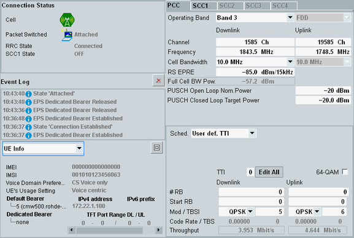

Main View
The main view of the signaling application shows status information and information derived from the uplink signal to the left and the most important settings to the right. All settings in this view can also be accessed via the configuration dialog.
For a description of available hotkeys, refer to "Signaling Control".
For the shortcut softkeys, refer to "Using the Shortcut Softkeys".

LTE signaling main view
For descriptions of the individual areas of the view, refer to the subsections.